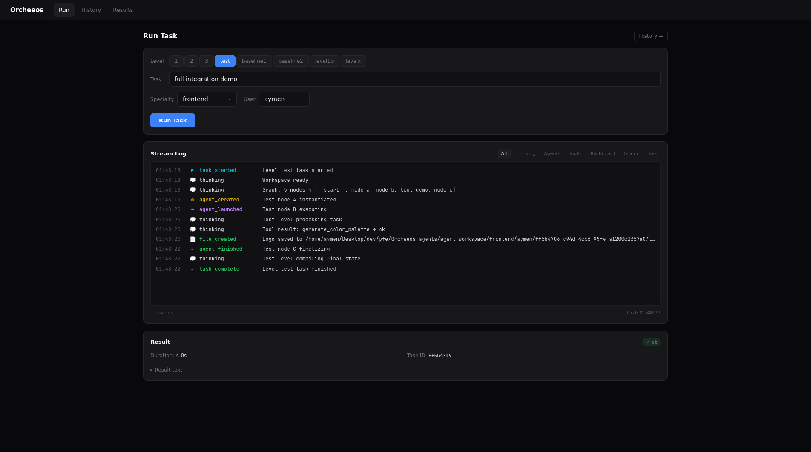
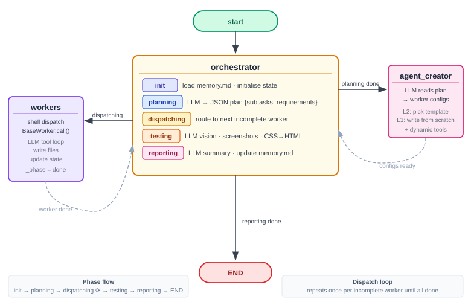
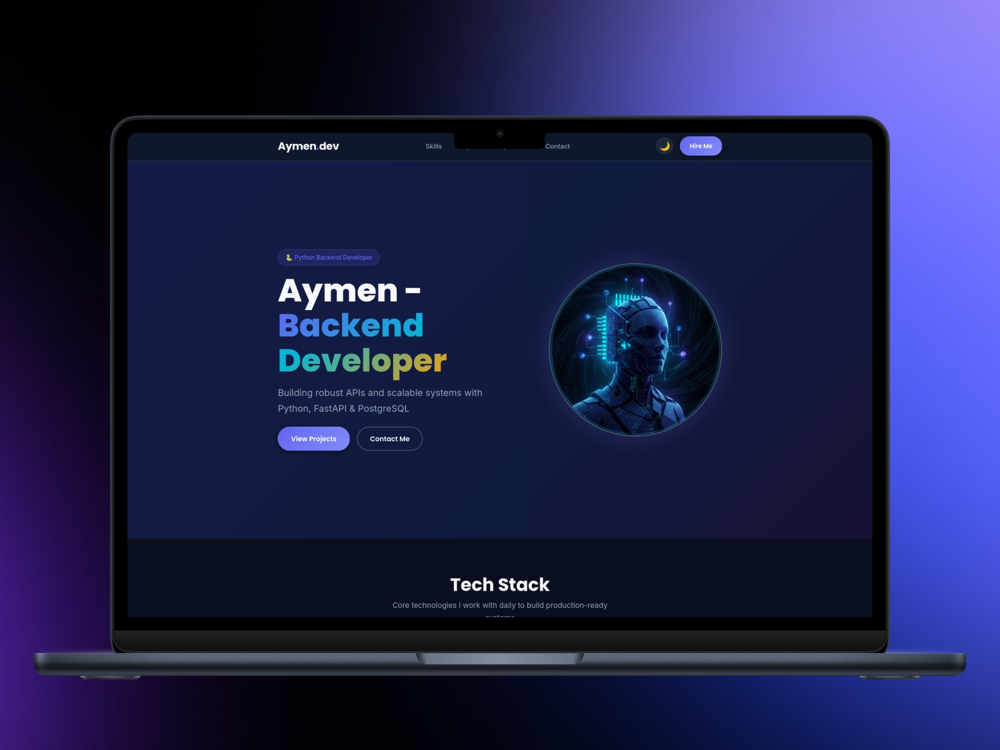
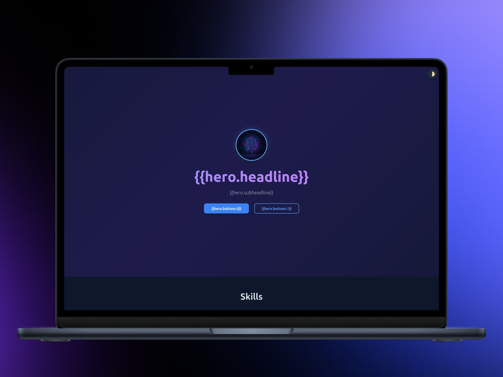
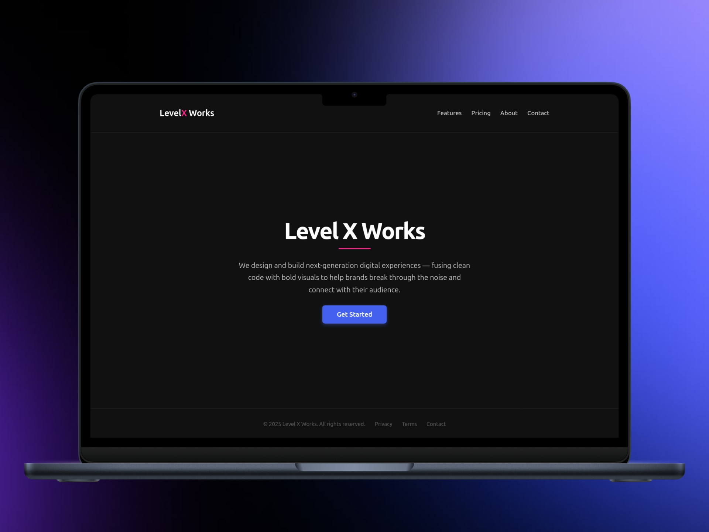
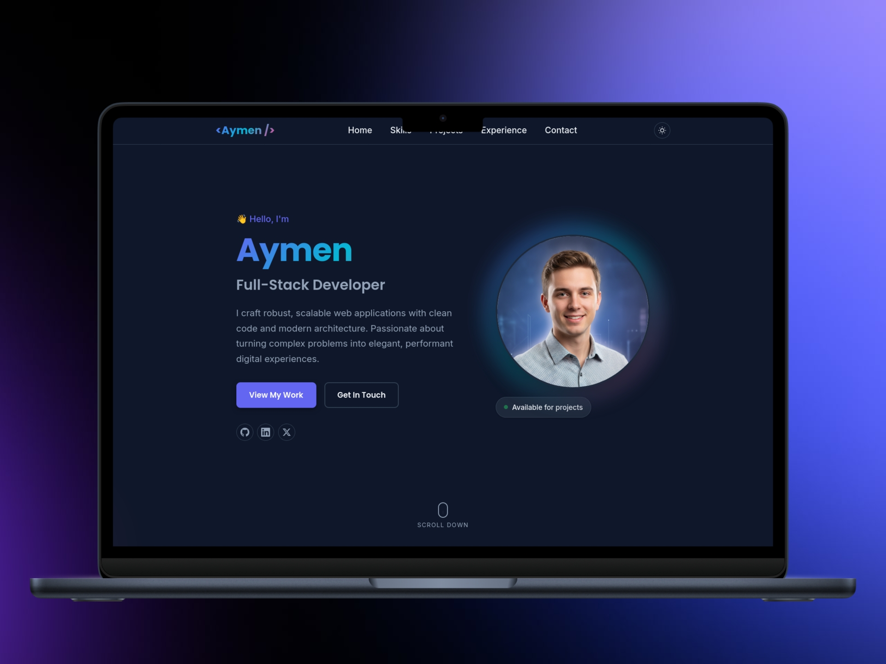
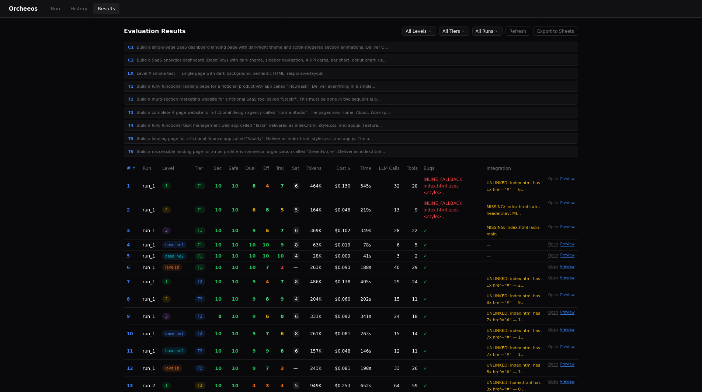

A behavioral study of LLM multi-agent systems across independent architectural variants.
The same task set runs on every graph to produce a controlled comparison matrix — how
increasing architectural freedom changes coordination quality, reasoning, failure modes, and emergent behavior.
dashboard — the control surfacereact 19 · typescript

fig.01 — dashboard home: launch a task, pick a variant + specialty, watch the run
the architecture — star topologyLangGraph StateGraph

fig.02 — every variant runs on the same StateGraph star — workers fan out from a central dispatch
All variants share one topology; what changes is who decides.
Baselines have no dispatch, Level 1 fixes the workers, Level 1B uses an LLM orchestrator,
Level 2 picks from templates, Level 3 invents agents from scratch, and Level X fuses
monolithic reliability with dynamic creation. LangSmith traces every decision path.
variants — the study axiscontrolled comparison
baseline 1Monolithic
A single agent. No orchestrator, no worker dispatch — the floor.
baseline 2Self-reflective
One agent that plans, executes, tests, and fixes itself internally.
level 1Predefined
5 specialty graphs, each with a fixed roster of workers.
level 1bManager Orchestrator
An LLM-driven orchestrator dispatches — no planner node.
level 2Template Creation
Picks from 18 predefined worker templates per task.
level 3Fully Autonomous
Generates agents from scratch — custom prompts, dynamic tools.
level xHybrid Orchestrator
Monolithic reliability fused with dynamic agent creation.
case study — portfolio, baseline vs. level Xemergent coordination

baseline — no coordination

level 3 — autonomous agents

level X — running a simple task

level X — portfolio generated by autonomous agents
evaluation — the comparison matrix36 runs scored

fig.03 — the results matrix: coordination quality, reasoning, cost, and emergent behavior across all variants
The same task set runs on every variant, then a fixed rubric scores coordination quality,
reasoning depth, cost efficiency, and emergent behavior. Manual scores layer on top of
automatic metrics — the matrix reveals where more freedom helps, and where it breaks.